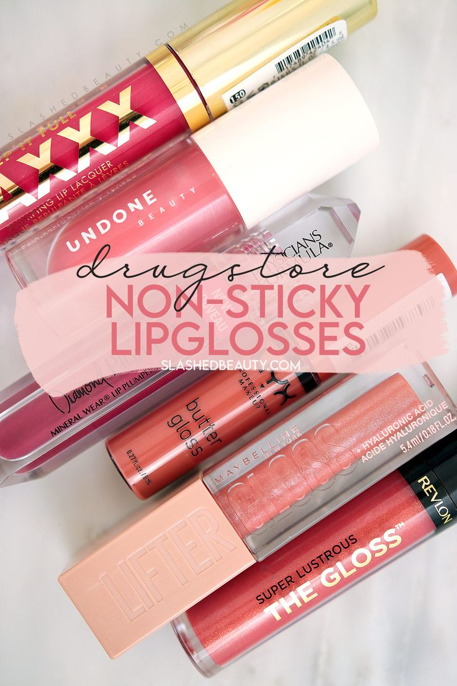

I Found the Loveliest Lipgloss
Somewhere along the way, I became the type of makeup person who’d rather have one thing they really love instead of 10 things they kinda like, and when it comes to lipgloss, the only one I’m rollin’ with these days is Rare Beauty’s Stay Vulnerable Glossy Lip Balm in Nearly Apricot ($20), a sheer coral.
With a super shiny finish and a sheer hint of tint, this gloss ticks all the boxes!
It’s sticky enough to hang onto my lips for a few hours, but not so terribly tacky that it’s distracting and it never leaves my lips feeling parched or flaky.
The level of obsession is so high at the moment that I keep it with me in my purse at all times, and if Connor happens to be in my orbit, I’ll ask her if she wants to wear a little bit too, and she always says yes.
It’s a pleasure to wear and reapply, and I reach for it often!
It comes in six shades:
- Nearly Neutral, a soft neutral pink
- Nearly Rose, a flushed pink
- Nearly Berry, a soft berry
- Nearly Mauve, a soft mauve
- Nearly Apricot, a soft coral
If you’re looking for a gift for mom, hint, hint, she’ll love this gloss. Or, get it as a gift for yourself. Or gift it to anyone in your life who loves a shiny, easy-to-wear gloss with loads of hydration and just enough tint and shine to make that pout pop!
Your friendly neighborhood beauty addict,
Karen
Comments
Jami T: This is my favorite lip gloss formula! Love Nearly Mauve and Nearly Neutral! Long time lurker of this blog and I love your content Karen! Thanks for always being genuine with us 🥰 Happy Mother’s day!
May 12th, 2024 at 1:07 pm
CL: I see Marnie’s learning to pose for the camera. Seeing her really makes me miss my late, beloved Sheltie. I really need to get a new dog, but I can’t do that until I’m settled in a new place – the backyard fence where I’m at is in very bad shape. Since the house is going to be put on the market “as is,†I’m not putting money into rebuilding the fence that’s between two residences. Hopefully by the end of the year I’ll be settled in some place that has a good fenced yard, as I know a Sheltie wouldn’t want to be cooped up in a house all day with just walks for exercise. FWIW, a lot of Shelties are on the big side – my dog was 18″ at the shoulder and about 35 lbs, when the standard says 16″ maximum height to be shown.
May 12th, 2024 at 6:52 pm
Leave a Comment